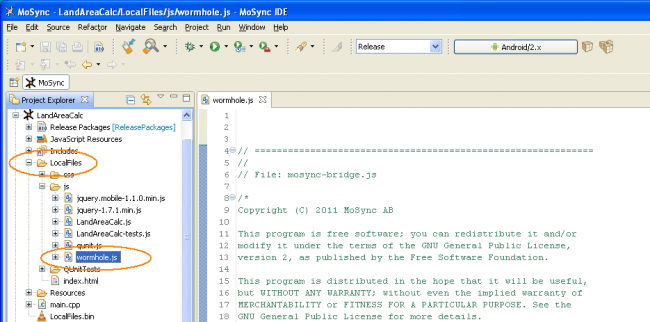
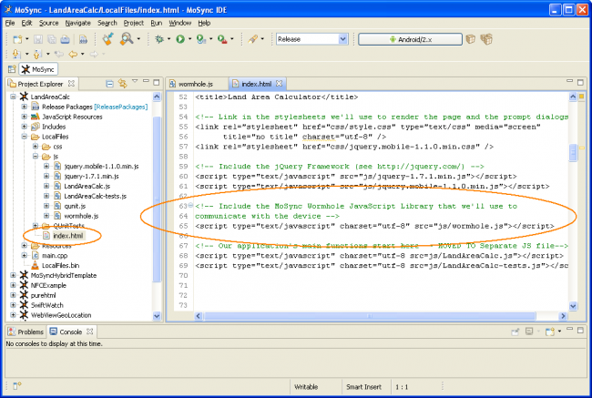
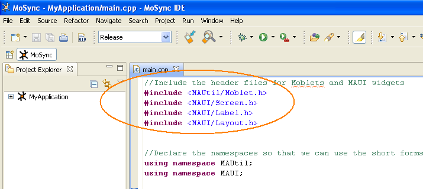
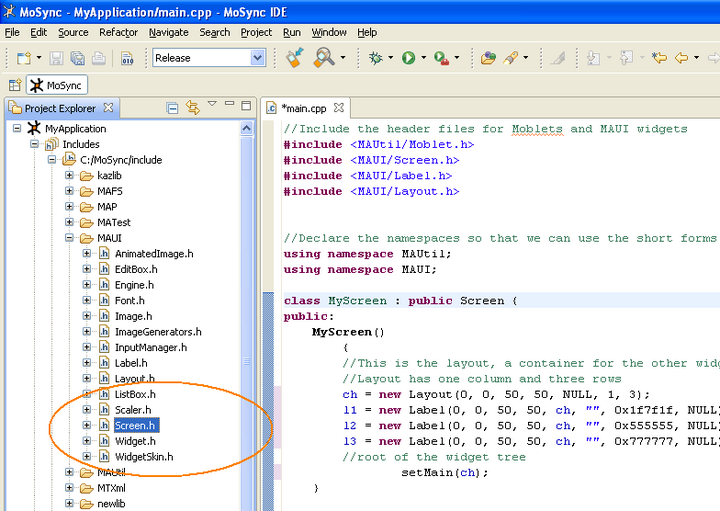
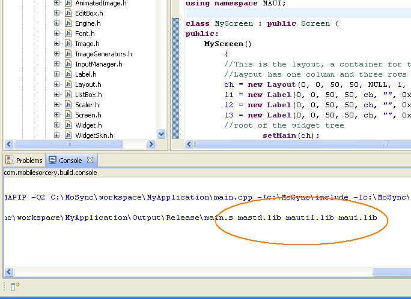

The MoSync code libraries and APIs provide you with thousands of pre-written functions that you can call from within your application. We have both JavaScript and C/C++ libraries and APIs. Here we show how to connect to them from your applications, and provide a brief overview of each.
Useful quick links:
Our library on the HTML5 side is called the MoSync Wormhole JavaScript Library (Library Overview | API Reference). It is a normal JavaScript library with the filename wormhole.js, and if you create a project (in either the MoSync IDE or in MoSync Reload) from one of our HTML5 templates you will see it in the /LocalFiles/js folder in your project:

The wormhole.js file actually concatenates several related JavaScript files into one library. Those files contain sets of related APIs for Native UI widget handling, push notification and sensor management, and a large set of PhoneGap-compatible functions.
To include the library, you just include it in your HTML page as you would any other JavaScript library:

You will then be able to call any Wormhole function in your JavaScript code.
The MoSync C++ libraries contain high-level classes and functions that you can call from your C/C++ code. To be able to use these libraries you need to reference the appropriate header files in your application using #include statements:

Here we are including the header file for Moblet (MoSync's event handling framework) and some header files for MAUI. That will enable us to access to the Moblet code and the MAUI screens and widgets later in our application.
You can get a list of all the header files that you can include in your application by browsing the Includes folder in your project in the MoSync SDK:

As well as referencing the header files in your application code, you also need to specify the actual libraries that you want to use in the project's Build Settings (Project > Properties > MoSync Project > Build Settings):
Here we are including the mautil.lib library that contains the moblet code and the maui.lib library that contains the screen and widget code.
Note that the mastd.lib library is always included in the build — you don't need to specify it in your list of additional libraries.
When you build your application, MoSync's toolchain links the libraries that are listed in the Additional Libraries field and mastd.lib with your code:

The MoSync libraries are stored in the /lib directory in your MoSync installation. A complete description of the libraries and their contents can be found in the MoSync IDE's help system (Help > MoSync API Reference) and also in our online API Reference Guide.
| Library | Content |
| mastd.lib | The main library of MoSync system calls (syscalls). The syscalls give you access to many basic platform features, including permanent storage, graphics, sound, communications, camera, and so on. |
| mafs.lib | Virtual file system classes and functions |
| map.lib | Slippy map classes and functions |
| matest.lib | MATest test framework |
| maui.lib | MAUI graphical user interface classes and functions |
| mautil.lib | General utilities, including Moblets, event handling, framebuffer, Bluetooth discovery and connections, containers, and geometric helper structures. |
| mtxml.lib | XML SAX parser classes and functions |
| nativeui.lib | Native user inteface classes and functions |
| notification.lib | Notifications classes and functions |
| testify.lib | Testify test framework |
| wormhole.lib | The MoSync Wormhole library with classes and functions for interacting with JavaScript in the HTML5 layer. |
| yajl.lib | JSON parser classes and functions |
The class libraries in the MoSync C++ layer are built upon a set of low-level functions called syscalls. The syscalls are actually in the MoSync runtimes, but there is a header file for them called maapi.h.
You can make use of the syscalls directly in your code, you do not need to include the header file, it is automatically linked with your code at build time.